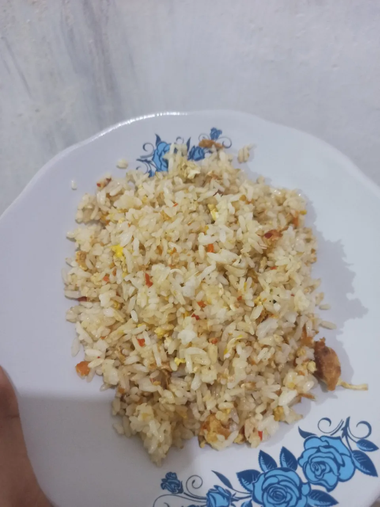

2 piring nasi putih (sebaiknya nasi dingin)
1 butir telur ayam3 siung bawang merah, iris tipis
2 siung bawang putih, cincang halus
2 buah cabai merah atau cabai rawit sesuai selera, iris serong
1 sendok makan kecap manis
2 sendok teh garam
2 sendok teh kaldu bubuk atau merica
2 sendok makan minyak goreng untuk menumis